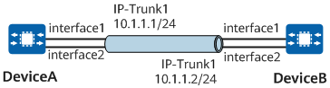

Example for Configuring Basic IP-Trunk Interface Functions
Networking Requirements
Establish an IP-Trunk logical link between DeviceA and DeviceB.

In this example, interface1 and interface2 represent POS0/1/0 and POS0/2/0, respectively.

Configuration Roadmap
The configuration roadmap is as follows:
Connect DeviceA and DeviceB through POS interfaces.
Create an IP-Trunk interface.
Add the POS interfaces to the IP-Trunk interface.
Data Preparation
To complete the configuration, you need the following data:
IP address of the IP-Trunk interface on DeviceA
IP address of the IP-Trunk interface on DeviceB
Procedure
- Configure DeviceA.
<HUAWEI> system-view[~HUAWEI] sysname DeviceA
# Create an IP-Trunk interface and assign an IP address to it.
[~DeviceA] interface ip-trunk 1
[~DeviceA-Ip-Trunk1] ip address 10.1.1.1 255.255.255.0
[~DeviceA-Ip-Trunk1] undo shutdown
[~DeviceA-Ip-Trunk1] quit
# Add POS0/1/0 and POS0/2/0 to IP-Trunk 1.
[~DeviceA] interface pos 0/1/0
[~DeviceA-Pos0/1/0] link-protocol hdlc
[~DeviceA-Pos0/1/0] ip-trunk 1
[~DeviceA-Pos0/1/0] undo shutdown
[~DeviceA-Pos0/1/0] quit
[~DeviceA] interface pos 0/2/0
[~DeviceA-Pos0/2/0] link-protocol hdlc
[~DeviceA-Pos0/2/0] ip-trunk 1
[~DeviceA-Pos0/2/0] undo shutdown
[~DeviceA-Pos0/2/0] quit
- Configure DeviceB.
<HUAWEI> system-view[~HUAWEI] sysname DeviceB
# Create an IP-Trunk interface and assign an IP address to it.
[~DeviceB] interface ip-trunk 1
[~DeviceB-Ip-Trunk1] ip address 10.1.1.2 255.255.255.0
[~DeviceB-Ip-Trunk1] undo shutdown
[~DeviceB-Ip-Trunk1] quit
# Add POS0/1/0 and POS0/2/0 to IP-Trunk 1.
[~DeviceB] interface pos 0/1/0
[~DeviceB–Pos0/1/0] link-protocol hdlc
[~DeviceB–Pos0/1/0] ip-trunk 1
[~DeviceB–Pos0/1/0] undo shutdown
[~DeviceB–Pos0/1/0] quit
[~DeviceB] interface pos 0/2/0
[~DeviceB–Pos0/2/0] link-protocol hdlc
[~DeviceB–Pos0/2/0] ip-trunk 1
[~DeviceB–Pos0/2/0] undo shutdown
[~DeviceB–Pos0/2/0] quit
- Verify the configuration.
Run the display interface ip-trunk command on DeviceA or DeviceB. The command output shows that the interface status is UP.
The following example uses the command output on DeviceA.
[~DeviceA] display interface ip-trunk 1
Ip-Trunk1 current state : UP (ifindex: 894) Line protocol current state : UP Link quality grade : GOODDescription: Route Port,Hash arithmetic : According to flow, Maximal BW: 155Mbps, Current BW: 155Mbps, The Maximum Transmit Unit is 9600 Internet Address is 10.1.1.1/24 Link layer protocol is nonstandard HDLC Current system time: 2013-08-08 10:26:52 Physical is IP_TRUNK Last 300 seconds input rate 35 bits/sec, 0 packets/sec Last 300 seconds output rate 3 bits/sec, 0 packets/sec Input: 17508 packets,805368 bytes 0 errors,0 drops Output:1750 packets,80500 bytes 0 errors,0 drops Last 300 seconds input utility rate: 0.01% Last 300 seconds output utility rate: 0.01% --------------------------------------------------- PortName Status Weight --------------------------------------------------- Pos0/1/0 UP 1 Pos0/2/0 UP 1 --------------------------------------------------- The Number of Ports in Trunk : 1 The Number of UP Ports in Trunk : 1
Check information about the member interfaces of the IP-Trunk interface on DeviceA.
[~DeviceA] display trunkmembership ip-trunk 1
Trunk ID: 1 TYPE: pos Number Of Ports in Trunk = 1 Number Of Up Ports in Trunk = 1 operate status: up Interface Pos0/1/0, valid, operate up, weight 1 Interface Pos0/2/0, valid, operate up, weight 1
Check that the IP-Trunk interfaces on DeviceA and DeviceB can ping each other.
[~DeviceA] ping -a 10.1.1.1 10.1.1.2
PING 10.1.1.2: 56 data bytes, press CTRL_C to break
Reply from 10.1.1.2: bytes=56 Sequence=1 ttl=255 time=62 ms
Reply from 10.1.1.2: bytes=56 Sequence=2 ttl=255 time=62 ms
Reply from 10.1.1.2: bytes=56 Sequence=3 ttl=255 time=62 ms
Reply from 10.1.1.2: bytes=56 Sequence=4 ttl=255 time=62 ms
Reply from 10.1.1.2: bytes=56 Sequence=5 ttl=255 time=62 ms
--- 10.1.1.2 ping statistics ---
5 packet(s) transmitted
5 packet(s) received
0.00% packet loss
round-trip min/avg/max = 62/62/62 ms
Configuration Scripts
DeviceA
#
sysname DeviceA#
interface Ip-Trunk1
ip address 10.1.1.1 255.255.255.0
#
interface Pos0/1/0link-protocol hdlc
ip-trunk 1
#
interface Pos0/2/0link-protocol hdlc
ip-trunk 1
#
return
DeviceB
#
sysname DeviceB#
interface Ip-Trunk1
ip address 10.1.1.2 255.255.255.0
#
interface Pos0/1/0link-protocol hdlc
ip-trunk 1
#
interface Pos0/2/0link-protocol hdlc
ip-trunk 1
#
return